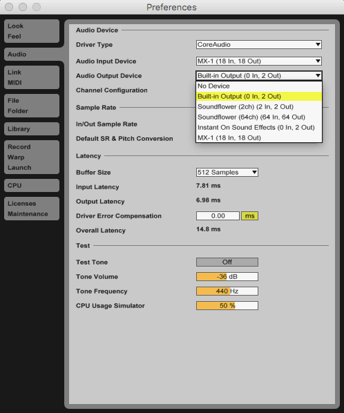
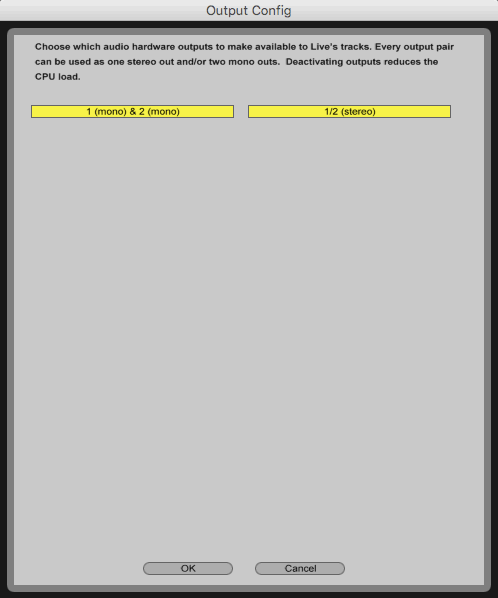

This tutorial uses the Roland MX-1 and TR-8 as an example.
Follow the instructions for your particular hardware to update to the latest firmware. Carefully follow instructions on how to do this or else you may require a visit to your local music repair service shop. Do not unplug the power while the firmware is updating.
Install the drivers for your hardware on your computer. For this example, I installed the following for the MX-1 and the TR-8.
Plug in the TR-8 into the MX-1 with a USB 2.0 A to B cable and then plug in the MX-1 to your computer. For this example, plug in the USB cable into USB 1 on the MX-1.
Open Ableton Live, select Preferences and select the Audio tab. Change the Audio Input Device to the MX-1:
Now change the Audio Output Device to the MX-1:
In the Channel Configuration below, select Input Config, select the following and save the changes:
Now select Output Config, select the following and save the changes:
Select the Link MIDI tab on the left and change to the following settings for the MX-1 input and output:
And now your MX-1 should be set up properly with Ableton!
Create a new Audio track and match the following settings, where 9/10 is the location of the TR-8.
Now after you've found a drum loop you want to record, set the ARM, EXT and record buttons when ready:
Press play on the MX-1 and let it play a little past the loop, then stop the recording. Now in the Arrangement View, you will see the recorded loop and can edit as needed. If you are happy with it, make sure to set the input to No Input so it plays back as expected.